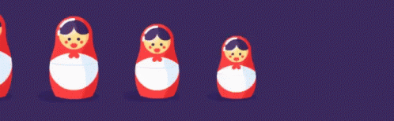
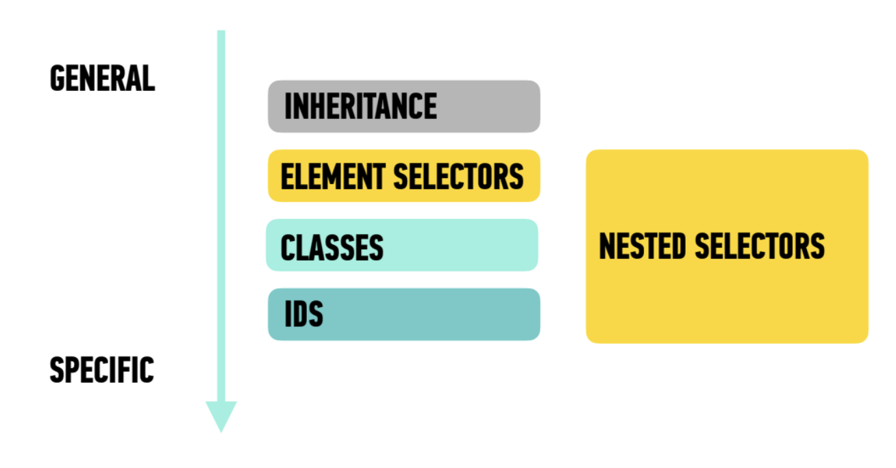

CSS Basics Interactive Lecture
Inheritance
In css, just like with humans, inheritance is how certain properties are passed on from a parent element down to the child and grandchild elements.
if you specify the font-family, background-color & color properties on the body tag, they will apply to the children as well now, not all properties are inherited - for example if the body had a border, the child elements would not inherit the border. The ones that are passed down are what we call base styles
here is a list of some of the most common inherited properties we will see during our time together, this is, by no means, a comprehensive list:
- color
- font-family
- font-size
- font-style
- font-weight
- letter-spacing
- list-style
- text-align
- text-indent
- text-transform
- word-spacing
this stays true until you override the code. we can do that here by adding a class to change the emphasized text color.
We can also target our h1,
h2
h3
li
Nested Selectors
Remember how we talked about nesting? And we compared code to the Russian Matryoshka dolls? In this section, we will explore how this works.

here are the most common types of selectors:
- universal: addresses every single element individually
- specific: address a specific type of element - for example, the code below addresses the li tag
- descendant: address an element that is a descendant of another - for example, the code below addresses the li tag inside the ol tag.
- multiple: addresses multiple elements, selectors sepererated by comma - for example, the code below addresses the h2 and the h3 elements
* {}
what happens if we change the body selector to the universal selector?
li {}
ol li {}
how do we change the li tags in the second list without changing the ones in the first list?
h2, h3 {}
change the background color of the h2 and the h3 elements
the way we address elements depends on where they are located within that stack, and the selector we choose can have a big impact.
Specificity is the Name of the Game!
The more specific rule will take precedence over the more general rule.
id
let's look at the navigation for this example. our code looks something like this:
<header>
<nav>
<a>
</a>
</nav>
</header>
in order to change the <a> we have to get specific.
we could just select the anchor tag, right? yes but, what happens if we have anchor tags elsewhere that we dont want to change? scroll to the top and change the nav anchors but leave the subNav alone
the most important rule: as you list styles the one on the bottom will always win! Think about the term Cascading!
Adding Custom Fonts
There are a couple of ways to do this:
Google Fontswe are going to head over to google fonts now and choose a font for this document. Google fonts is a 100% free option
we will need to add code to both the head AND to our css file in order to make this work.
Adobe Fonts
for those of you with creative cloud access, you can also find fonts for your web projects here. If you don't have access to the creative cloud, use Google Fonts instead
find a font here and add it to your web project, thats the key. then do the same thing you did for Google fonts.
jump links
read methen make the jumplinks work for each section
jump to image!my reflection
what I honestly learnt from this excercise is 1] i need to stop trying to code at midnight and 2] i need to make sure the zoom recording works for me on a day that is not the day before a coding assignment of this magnitude is due. i definitely messed up a lot of the css, and will be practicing it more in my sketchbook, because if i want to sleep tonight i have no other choice than to stop with what i have. i feel terrible, i dont like practicing css at all, and with more time i would have taken better notes on the interactive lecture. i will not make my mistakes again, but i am so tired that i'd rather practice on my own code than change template code. it makes it easier for me to pick up the skills. i like and prefer it in my learning. this is the best thing this set of assignments has taught me: coding is way more fun to learn when its all your own choice. i am sorry for my informality, but again- it is midnight. i apologize for the work ive done here, it isnt my best. i will code a little further from the sun with better notes this next week, i swear. i made genuine attempts at everything i could, broke almost all of it, and it is all still confusing to me. css is a beautiful horse i have yet to properly tame. i have learnt to ask for help more.